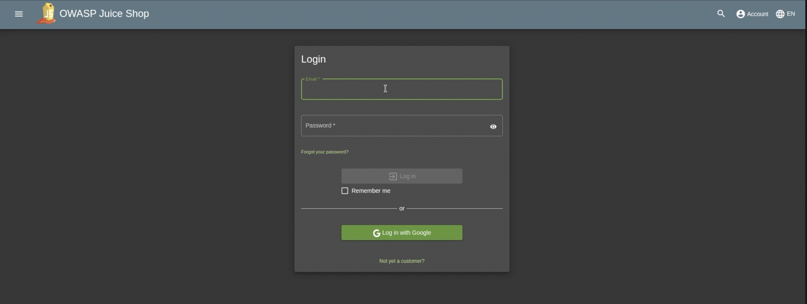
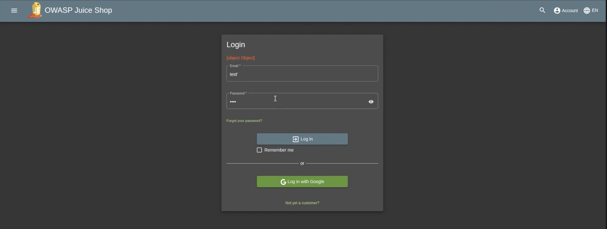
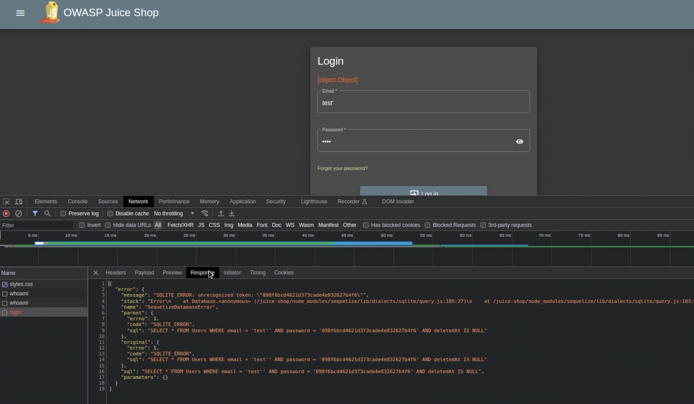
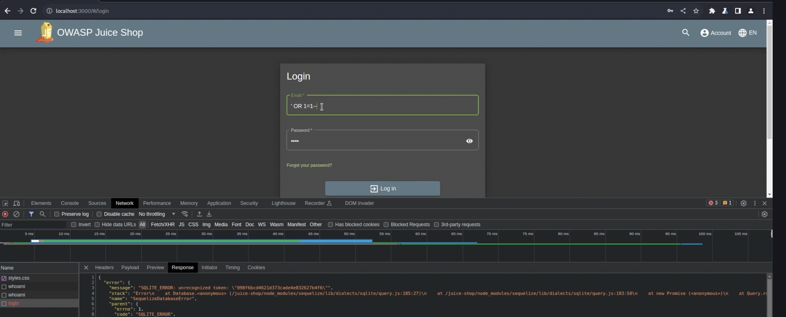
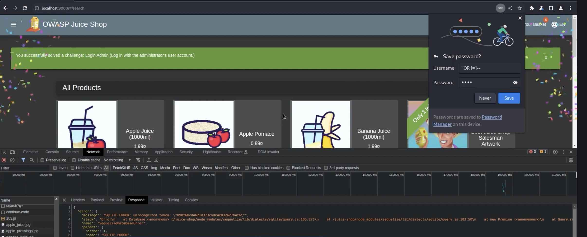

SQL Injecting OWASP Juice Shop

First off for this blog, I want to give a little intro to sql injection. SQL is the language that websites use to talk to databases that store site data. This can range from product listings to user accounts and payment info. SQL injection happens when a site puts user input straight into those database queries, which lets us "inject" special characters or SQL code to read, change, or delete data.
Here I can see that we have a login page from our OWASP juice shop website. I can see that it accepts a email and password. I'm just going to put test for both the email and password just to see what happens

Okay, as expected it just said invalid email and password. However now im going to do test' as the username.
Okay cool! Now it says [object Object]. Now you might be wondering what the heck that means and why did I do test' as the username. [object Object] means that the server sent back some structured data (like JSON to respond to my request) but the website just printed it raw instead of showing the actual message. Basically, the backend returned an object and the front end didnt format it, so the browser showed the default text for objects. I typed test' on purpose because the extra single quote is a quick probe. Many sites build database queries by sticking what you type straight into SQL. Adding a quote can break that query. If the backend isn't careful, that quote can make the database run something different than the developer intended, which is the basic idea behind SQL injection. Seeing an error or [object Object] after test' is a good sign that user input is getting passed through in a risky way.
I can confirm this by doing inspect on the page and then going to the network section and seeing that there is a 500 error here. 500 error is just a generic message indicating that the website's server encountered an unexpected problem and could not complete the request. When I actually look at the response, I can see that the server gave me a SQLITE error. SQLITE is just a type of database that is really common in containerized web pages cause its super portable. If you look more down on the request, you can see the sql query it was trying to execute. "SELECT * FROM Users WHERE email = 'test'' AND password = '098f6bcd4621d373cade4e832627b4f6' AND deletedAt IS NULL". This sql query means that it wanted to select a user from the database where the email = test and the password was this hash that the source string was test. However, you can see that the reason this request crashed is because I put the single quote at the end of test. So now instead of test being neatly wrapped up in single quotes like 'test', the extra quote has actually broken the query.
Now, lets think about how I can take advantage of this vulnerability to make the query do things that I want it to do instead of continuing as normal. This is where we actually start doing the sql injection. From the sql query, if we are actually going to be selecting something from our database, what would happen if I put ' OR 1=1-- for the email. So the whole sql query would look like this "SELECT * FROM Users WHERE email = '' OR 1=1--' AND password = '098f6bcd4621d373cade4e832627b4f6' AND deletedAt IS NULL". Basically what this says is that the email is blank due to the '', or 1=1 (which is always true), and then the two dashes mean that its a sql comment. So from a high level overview, I have transformed the sql query so it just becomes this "SELECT * FROM Users WHERE email = '' OR 1=1--'" (disregarding the password and the null) and when we are trying to select a user from the user table, it will read 1=1 which is always true, then it means i'm able to log in successfully to the server.
 I just put in ' OR 1=1-- as the email and as you can see it worked!